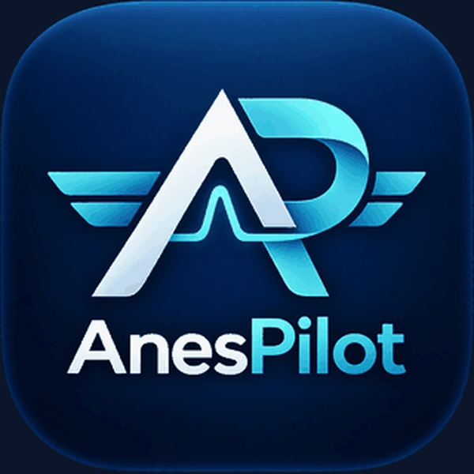
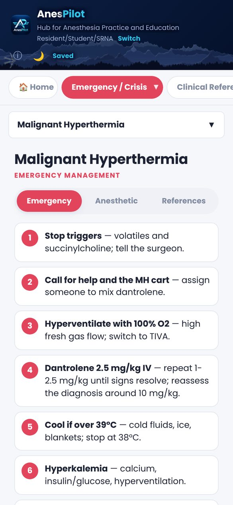
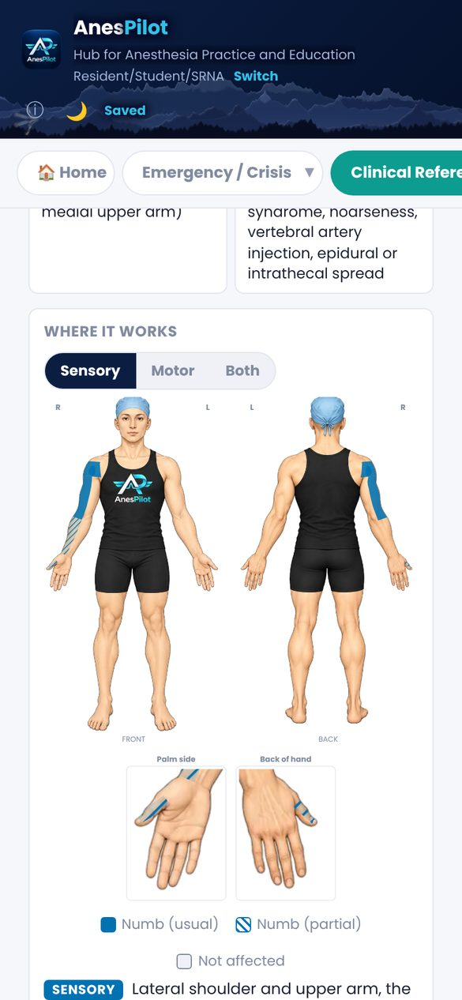
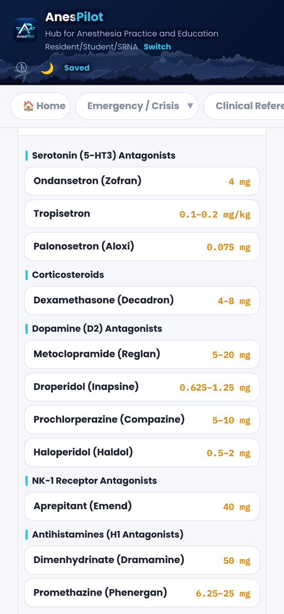

Emergency / Crisis checklists
22 crises from malignant hyperthermia to LAST, each opening on short numbered steps, with anesthetic considerations and references. A home screen widget opens them in one tap.
A hub for anesthesia practice and education. Crisis checklists, drug references, regional blocks and your case log, built for nurse anesthesia students and the clinicians who teach them.

Works offline, opens fast, and is written for the way anesthesia students study and practice.
22 crises from malignant hyperthermia to LAST, each opening on short numbered steps, with anesthetic considerations and references. A home screen widget opens them in one tap.
Reference doses, onset, duration and key cautions for more than 100 anesthesia drugs, grouped by category and by drug class.
25 blocks with sonoanatomy, technique and volumes, and a "Where it works" body map for sensory and motor coverage.
Spinal, epidural and CSE dosing, sensory levels on the body, labor and cesarean anesthesia, and anticoagulation timing.
Log cases in seconds and see progress toward the current Council on Accreditation clinical requirements.
Surgical positioning and nerve-injury guide, worked equations, calculators and machine checklists.



Read the Privacy Policy and the AI Notice.
Questions? Email theanespilot@gmail.com.